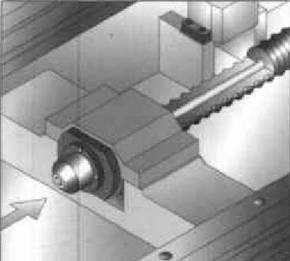

|
2.1.2. Kayýt - Kýzak Sistemi ve Yapýsý
Mekanik bileþenlerin tamamý, rulmanlar, bilyalý vidalar, kýzaklar birbiri ile sürtünmektedir ve ýsý üretmektedir. Motorlar ýsý üretmektedir. Kesme iþlemi esnasýnda ýsý üretilmektedir. Oluþan tüm bu ýsý makine mekanik bileþenlerinin, fiziksel þeklini deðiþtirebilir ki ýsýndýkça uzama veya soðudukça büzülme meydana gelecektir (3).
Vida þaftýnýn termal genleþmesi; l = q x t x l formülü ile hesaplanýr. Burada;
q : Genleþme katsayýsý, çelik için 12µ / °C
t: Sýcaklýk artýþý °C
l: Bilyalý vida boyu mm
Tablo 2.1. 5 °C'lik sýcaklýk artýþýnda tabla milindeki uzama (3)
Bilyalý vida boyu (mm) |
Uzama miktarý (mikron) |
500 |
30 |
1.000 |
60 |
1.500 |
90 |
2.000 |
120 |
Deðiþik hareket boylarýna sahip tezgah sistemlerinde, 5 °C'lik bir sýcaklýk artýþýnda bilyalý vida boyunda meydana gelen uzama miktarý, Tablo 2.1. de verilmiþtir. Bilyalý vida destek rulmanlarýnýn 4 mikronu aþmayacak þekilde eksenel oynamalara olanak tanýmasýna karþýn bu sýcaklýk artýþý ile elde edilen deðerler oldukça yüksek deðerlere ulaþmaktadýr. Bu ise, kýzak sisteminde elemine edilmesi gereken en önemli aþamalardan biridir. Bilyalý vida sisteminde oluþabilecek olan sýcaklýk artýþlarýný en aza indirmek için þu kriterler göz önünde bulundurulmalýdýr:
1- Bilyalý vida ve destek rulmanlarýndaki ön gerilmenin asgariye indirilmesi,
2- Bilyalý vida adýmýnýn daha büyük seçilmesi ve bilyalý vida devrinin mümkün olduðunca düþük seçilmesi,
3- Bilyalý vida sisteminin yað lanmasýnda uygun sistemin seçilmesi,
4- Yaðlayýcý, hava veya benzeri elemanlarýn kullanýlmasý suretiyle bilyalý vida çevresel yüzeyinin soðutulmasý,
5- Bilyalý vida sistemini soðutmak için, vida merkezinden, vida boyunca açýlan bir kanaldan yaðýn sürekli temin edilmesi (3).
Böyle bir sistem yapýsý Þekil 2.2. de gösterilmiþtir.

Þekil 2.2. Bilyalý vida sisteminin merkezi sistemle soðutulmasý (3)
Hareket ne kadar hýzlý olursa, daha fazla ýsý üretilir. Hassasiyet konularý yanýnda, ýsýnma makine aþýnmasýný hýzlandýrmakta, bunun sonucu olarak ön gerilmeli rulmanlarda ve diðer mekanik bileþenlerde yüksek temas yükleri oluþmaktadýr. Bunun sonucunda, yüksek sýcaklýklar dolayýsýyla sistemi oluþturan her bir parçada aþýnma kaçýnýlmaz olmaktadýr. Çoðu makine imalatçýsý, servo motorlar etrafýndan ve / veya bilyalý vidanýn içinden soðutma suyu dolandýran sistemler kullanmaktadýr. Buna karþýn sýcaklýk farklarý dolayýsýyla termal gerilmelerin oluþumu kaçýnýlmazdýr. Özellikle tezgah uzun bir süre kapalý kaldýktan sonra, çalýþtýrýlmak için açýldýðýnda makine elemanlarý arasýndaki sýcaklýk farklarýný en aza indirmek için, makine ilk açýldýðýnda, düþük devir ve ilerleme deðerlerinde boþta çalýþtýrýlmak suretiyle ýsýtma iþlemine tabi tutulur (3).
Yüksek hýzda iþleme için kutu tipi kýzak yapýsý yerine lineer kýzaklý sistemler kullanýlýr. Makinanýn ana hareketli kýsýmlarýnýn, rulmanlar üzerine konulmasý dolayýsýyla sürtünme azaltýlýr, eksen hareketlerinin icra edilmesi için daha az kuvvete gereksinim duyulur ve daha az ýsý oluþur (3).
2.2. CNC Kontrol Sistemi
2.2.1. Önüne Bak Kontrolü (Look Ahead Control)
Look-Ahead, sadece bir kaç yeni kontrol sisteminde bulunan oldukça yeni bir unsurdur. Look-Ahead, point-to-point (nokta-nokta) hareketlerin, yüksek hýzda yapýlmasý sýrasýnda bindirme olayýndan korunmak amacýyla geliþtirilmiþ bir kontrol fonksiyonudur (4, 5).
Look-Ahead fonksiyonunun, iþleme sýrasýnda takým yolunu programlanan konturda takip etmesi için bir sonraki iþleme bloklarýna ait çok sayýda bloðu (noktasal hareketler) görebilmesi ve bu bloklardaki kontur deðiþimlerine göre deðerlendirme yapmasý gereklidir (4, 5).
Yüksek hýzda iþleme için geliþmiþ kontroller ve CAD/CAM entegrasyonu sonucu CNC tezgahlar 3D yüzeylerin iþlenmesinde daha fazla kullanýlmaya baþlamýþtýr. CNC uygulamalarýnda, takýmýn eski NC ve CNC tezgahlarda görülen bekleme olmaksýzýn, noktalar arasýnda akýcý bir þekilde kesme iþlemini yapabilmesi gerekir. Eðer bir CNC makinada çok küçük artýþ birimleri ile (0.1..1) nokta-nokta hareketleri yapacak þekilde yüksek hýzda iþleme yaptýrýlmak istenirse; ani kontur deðiþimlerinin olduðu bölgelerde CNC tezgahýn konturdan sapmasý ve parçaya dalmasý yüksek hýzlý kontrolle donatýlmýþ makinalar haricinde kaçýnýlmazdýr (4, 5).
2.2.2. Servo Çevrim Zamaný (Servo Cycle Time)
CNC, kontrolün her bir ölçme iþlemini alýp, komut olarak vermesi için gerekli olan zaman olarak tanýmlanýr. Baþka bir deyiþle, eðer kontrol sistemi servo-çevrim zamaný 20 ms (1 mili saniye = 1/1.000 saniye) ise, neticede eksen pozisyonlarýnýn ölçülmesi ve yeni yön komutlarýnýn verilmesi saniyede 50 defa yapýlýr (4, 5).
Ýþleme yapýlan þartlar:
Ýlerleme miktarý: 2.500 mm/dak
Ýstenen yüzey hassasiyeti: 0,01 mm
Servo çevrim süresi: 3 ms
Basit bir hesaplama ile dakikada 2.500 mm yol alan tabla, 1 saniyede 2.500/60 = 41,66 mm yol alýr. 1 saniyelik süre içerisinde 1.000/3 = 333 defa eksen pozisyonlamasý yapýlýr. 1 saniyede alýnan yol 41,66, 333'e bölünürse her bir ölçüm iþlemi neticesinde makine tablasýnýn aldýðý yol, 0,125 mm olarak bulunur. Ýstenen yüzey hassasiyeti 0,01 mm olduðundan bu yüzey kalitesini elde etmek imkansýzdýr. Çünkü makine 0,125 mm artýþ deðerleri sonucunda kontrol dýþý kalýr.
2.2.3. Doðrudan Sayýsal Denetim (DNC - Direct Numerical Control)
Takým yoluna ait program bilgilerinin, CNC kontrolün yüksek hýz performansýndan ödün vermeden, CNC kontrol sistemine mümkün olan en hýzlý biçimde aktarýlmasý gerekmektedir. CNC kontrol sistemine, programýn dýþ ortamdaki bir bilgisayardan yüklenecek þekilde iþleme operasyonu yaptýrýlmasý DNC (Direct Numerical Control) olarak adlandýrýlýr (4, 5).
DNC tipik olarak, 110 . 38 400 baud veya bits /sn hýzlarýnda seri haberleþme vasýtasýyla yerine getirilir. Haberleþme hýzý olarak, en yaygýn þekilde kullanýlan hýz 9600 baud (960 karakter/sn- 9600/8=1200 Byte/sn) dir. CNC için program bilgileri, bloklar þeklindedir ve ortalama olarak her bir satýrda (blok) yaklaþýk 20 karakter bulunur. Örneðin G1 X123.456 Z234.567. Her ne kadar boþluk (space) gibi "kontrol" karakterleri görünmese de bunlar da iletim sýrasýnda zaman alýr. 3, 4 veya 5 eksen iþleme operasyonlarý için, ek adres ve sayýsal deðerlerin, satýr numaralarýnýn ve ilerleme v.s. gibi deðerlerin eklenmesi suretiyle, tek bir bloktaki gönderilecek karakter sayýsý daha da artar. 960 karakter/sn haberleþme hýzýnda, CNC gerçekte iþleme kapasitesi açýsýndan 960 / 20 = 48 blok/sn gibi çok kýsýtlý sayýda bloðu icra edebilecektir. Saniyede 48 satýrlýk bir haberleþme Yüksek hýzda iþleme için oldukça düþüktür (4, 5).
2.2.4. Direkt CNC Að Baðlantýsý (DCN- Direct CNC Networking)
Direkt að baðlantýsý veya DCN, yüksek hýzda iþlemedeki veri transfer problemine daha iyi çözüm sunmaktadýr. DCN basit olarak, DNC sistemini komple elimine etmek suretiyle CAD/CAM bilgisayarýndan CNC kontrol sistemine direkt að baðlantýsý saðlayan mevcut að mimarilerini kullanmaktadýr. DCN normal olarak DNC sisteminden 1.000 kat daha hýzlýdýr. En basit þekilde, 9.600 baudla haberleþen bir DNC sisteminde, 10 Mb lýk bir dosya 3 saat içinde transfer edilirken, ayný dosya DCN ile bir dakikadan az bir zamanda transfer edilebilir (4, 5).
Günümüzde kullanýlan en yaygýn að baðlantýsý ethernet olmasýna raðmen, Arcnet, Token Ring ve Fast Ethernet günümüzde kullanýlan yaygýn að baðlantýlarýndandýr. Bu noktada ethernetin veri transfer hýzlarýna bakýldýðýnda standart ethernet baðlantýsý ile saniyede 1 milyon karakter (10 Megabit ) veri transferi yapýlabildiði düþünüldüðünde, DNC haberleþme hýzýndan 1.000 kat daha hýzlý olduðu görülmektedir (4, 5).
2.2.5. Dijital Sinyal Ýþlemcisi (DSP- Digital Signal Processing)
Sýradan bilgisayarlarýn yüksek performanslý CNC ler olarak kullanýlabilmesini saðlayan teknoloji DSP olarak adlandýrýlýr (4, 5).
Hýzlý servo çevrim zamanlarýnýn temel anahtarý DSP'dir. DSP ayni zamanda CNC kontrolün ivmelenme ve yavaþlama rampalarýný da etkilemektedir (4 ,5).
DSP lerin bir baþka faydasý da, bilgisayardaki ana iþlemcinin diðer görevleri yapmak için rahat çalýþabilmesidir. Gerçekte, makina kontrolü olarak DSP ile entegre edilmiþ çoklu iþlemcilerin kullanýldýðý bir bilgisayar, büyük performans artýþý saðlamaktadýr. DSP eksen pozisyonlarýnýn ölçümünde ve eksenlere yeni komut deðerlerinin verilmesinde kullanýlýrken; ana bilgisayar da að baðlantýsý üzerinden takým yolu verilerinin alýnmasýný ve bu takým yolu verilerine göre uygun ilerleme deðerinin verilmesini saðlamaktadýr (4, 5).
|